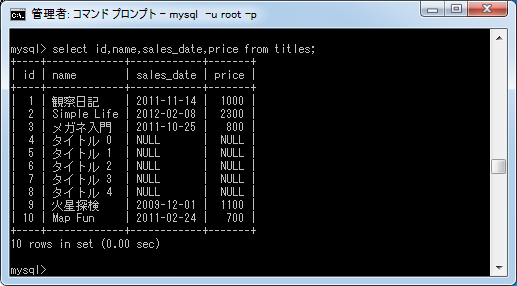

rake db:seedを使った初期データの投入
Railsアプリケーションでテーブルやモデルなどの準備が出来たあと、初期データをテーブルに追加する方法を解説します。テストを行なうためのサンプルデータを追加したり、顧客データなどの既に用意されているデータを事前に追加しておく場合などに使います。
1.個別データの追加
2.大量のサンプルデータの追加
3.CSVを読み込んでデータを追加
個別データの追加
初期データを追加する方法は直接データベースにアクセスして追加することもできますが、今回はRailsで用意されている仕組みを使います。では「db/seeds.rb」ファイルを見て下さい。
このファイルはRubyを使って記述されたスクリプトファイルです。このファイルの中にデータを追加するためのスクリプトを記述し実行することでデータを追加します。
ではファイルをテキストエディタで開いて下さい。
# This file should contain all the record creation needed to seed the database with its default values.
# The data can then be loaded with the rake db:seed (or created alongside the db with db:setup).
#
# Examples:
#
# cities = City.create([{ name: 'Chicago' }, { name: 'Copenhagen' }])
# Mayor.create(name: 'Emanuel', city: cities.first)
現在はコメントだけ記載されています。ではスクリプトを記述していきます。
今回データを追加するテーブルに対応したモデルのクラスであるTitleクラスで、クラスで用意されているクラスメソッドであるcreateメソッドを使ってデータを追加していきます。
モデルクラス名.create(:カラム名1 => 値1, :カラム名2 => 値2, ...)
今回は次のように「db/seeds.rb」ファイルに次のように記述しました。
# coding: utf-8 Title.create(:name => '観察日記', :sales_date => '2011-11-14', :price => 1000) Title.create(:name => 'Simple Life', :sales_date => '2012-02-08', :price => 2300) Title.create(:name => 'メガネ入門', :sales_date => '2011-10-25', :price => 800)
※ 日本語を使用する場合はファイルの先頭に「# coding: utf-8」を忘れないようにして下さい。
スクリプトファイルを作成したら、次のコマンドを実行して下さい。
rake db:seed
これで先程記述したスクリプトが実行され、テーブルに初期データが追加されます。では実際に行なってみます。
スクリプトが実行され3つのデータが追加されました。ではMySQLに接続してテーブルのデータを参照してみます。
スクリプトに記述したデータがテーブルに追加されちることが確認できます。
大量のサンプルデータの追加
先程は追加するデータを1つ1つ追加しましたが、テスト用にサンプルデータをとにかく多く追加したい場合もあります。そのような場合、「db/seeds.rb」ファイルはRubyで記述されたスクリプトですので任意のスクリプトを記述してデータを追加することができます。
今回は例として「db/seeds.rb」ファイルを次のように書き換えました。
# coding: utf-8
5.times do |no|
Title.create(:name => "タイトル #{no}")
end
ダブルクオーテーションで囲まれた文字列の中で #{変数} と記述すると変数の値が文字列の中で展開されます。
では先程と同じく次のコマンドを実行して下さい。
rake db:seed
スクリプトが実行されデータが追加されました。ではMySQLに接続してテーブルのデータを参照してみます。
新しいデータが5つ追加されていることが確認できます。
CSVを読み込んでデータを追加
自動で作成されるデータではなく、顧客一覧のような作成済みのデータや郵便番号一覧などの参照用データなどあらかじめ用意されたデータを読み込みたい場合もあります。例としてCSVで用意されているデータを読み込んでテーブルに追加する場合も試してみます。
RubyでCSVデータを読み込むには次のような記述を行ないます。
require "csv"
CSV.foreach('db/sample.csv') do |row|
Title.create(:name => row[0], :sales_date => row[1], :price => row[2])
end
上記内容を「db/seeds.rb」ファイルに記述しました。CSVファイルへのパスは、アプリケーションのルートからの相対リンクで記述して下さい。
また読み込むデータとして次のようなファイルを用意します。
火星探検, 2009-12-01, 1100 Map Fun, 2011-02-24, 700
CSVファイルは「db/sample.csv」として保存しました。
では今までと同じく次のコマンドを実行して下さい。
rake db:seed
スクリプトが実行されデータが追加されました。ではMySQLに接続してテーブルのデータを参照してみます。

CSVに記載された2つのデータが読み込まれテーブルに追加されていることが確認できます。
( Written by Tatsuo Ikura )

著者 / TATSUO IKURA
初心者～中級者の方を対象としたプログラミング方法や開発環境の構築の解説を行うサイトの運営を行っています。